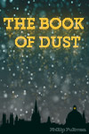

“Malcolm, you en’t in bed yet—good. Come downstairs for a minute. There’s a gentleman wants a word with you.” “Who is it?” said Malcolm eagerly, jumping up and following his father out. “Keep your voice down. He’ll tell you who he is if he wants to.” “Where is he?” “In the Terrace Room. Take him a glass of Tokay.” “What’s that?” “Hungarian wine. Come on, hurry up. Mind your manners and tell the truth.” “I always do,” said Malcolm automatically. “News to me,” said his father. But he ruffled Malcolm’s hair before they entered the bar. The gentleman waiting gave him a start, though all he was doing was sitting still by the cold fireplace. Perhaps it was his dæmon, a beautiful silvery spotted leopard, or perhaps it was his dark, saturnine expression; in any event, Malcolm felt daunted, and very young and small. His dæmon, Asta, became a moth. READ MORE...